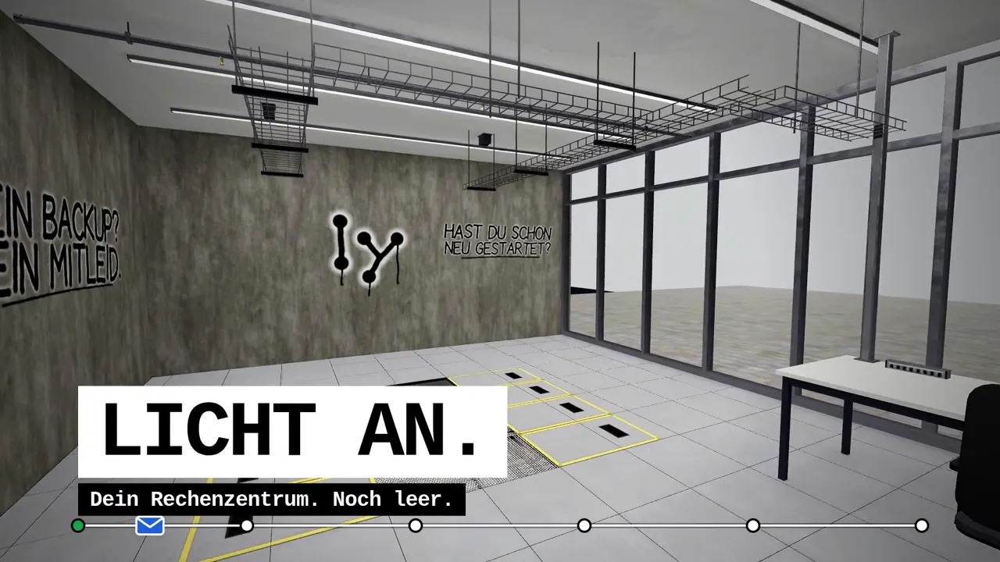
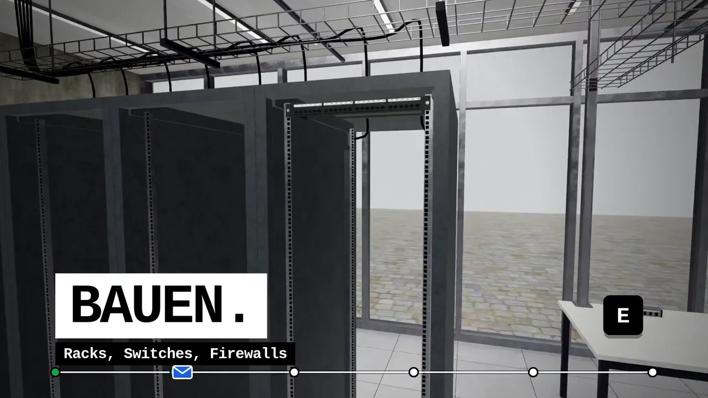
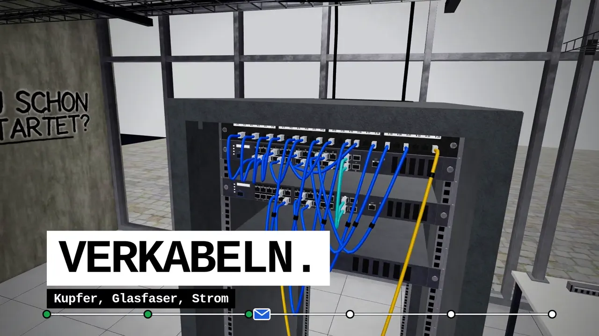
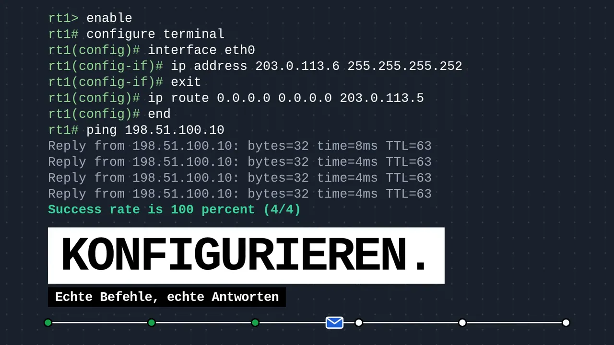
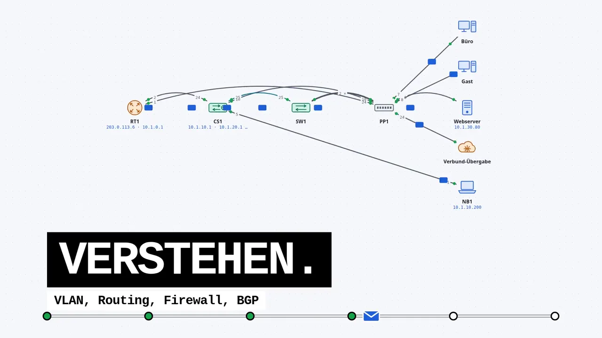

Ein Spiel
Du läufst durch deinen Serverraum, kaufst im Shop ein, trägst Geräte zum Rack und baust sie Höheneinheit für Höheneinheit ein. Levels mit Budget, Ziele, Speedrun-Timer und Sprüche an der Wand, die jede Informatikerin kennt.
leyoNET DC ist ein Spiel und ein Simulator zugleich: Du baust in 3D ein eigenes Rechenzentrum – kaufen, einbauen, verkabeln, Strom anschliessen, konfigurieren. Ob dein Netz läuft, entscheidet der Simulationskern von leyoNET. Jeder Ping wird wirklich gerechnet.
DC steht für Datacenter, auf Deutsch Rechenzentrum: der Raum, in dem die Server und Netzwerkgeräte stehen, über die Websites, Schulplattformen und Chats laufen. In leyoNET DC stehst du selbst darin.
Du läufst durch deinen Serverraum, kaufst im Shop ein, trägst Geräte zum Rack und baust sie Höheneinheit für Höheneinheit ein. Levels mit Budget, Ziele, Speedrun-Timer und Sprüche an der Wand, die jede Informatikerin kennt.
Hinter dem Spiel rechnet derselbe Kern wie im Netzwerksimulator leyoNET: Adressen, VLANs, Routing, NAT, Firewall, BGP. Die Konsole versteht echte Befehle, der Netzplan entsteht von selbst aus dem, was du gebaut hast.
Gemacht für Informatik EFZ: Die Levels führen vom ersten Kabel bis zum Core-Switch. Im Verbund baut die ganze Klasse ein gemeinsames Netz, die Lehrperson sieht alles auf dem Dashboard und nimmt die Standorte ab.
Aus dem Film, so wie es im Spiel aussieht.

Ein leerer Raum, ein Budget, ein Auftrag. Gelbe Markierungen zeigen, wo Racks stehen dürfen.

Racks aufstellen, Switches, Router, Firewalls und Patchpanels einbauen – mit Vorschau, ob das Gerät in die Höheneinheit passt.

Kupfer, Glasfaser und Strom: Kabel in die Hand, Port A, Port B. Bündel hängen mit Durchhang in der Kabelrinne, wie in echt.

Am Notebook auf dem Pult oder an der Konsole: echte Befehle, echte Antworten. ip route, ping, show.

Der Netzplan zeichnet sich aus deinem Raum, auch live auf dem Wandbildschirm. Grün wird ein Ziel erst, wenn es in der Simulation wirklich klappt.

Spielstand speichern, später weiterbauen. Oder das Level neu starten und auf Zeit spielen.
Jedes Level startet leer, mit Budget und Bauplan. Wer will, lässt sich den Aufbau stellen und konfiguriert nur.
| Level | Auftrag | Themen |
|---|---|---|
| 1 | Zwei Notebooks verbinden | Kabel, IPv4, Ping |
| 2 | Rack bauen, patchen, Uplink | Rack, Patchpanel, Strom |
| 3 | Switch per Konsole einrichten | Konsole, Verwaltungsadresse, Speichern |
| 4 | Router: zwei Netze verbinden | Subnetze, Gateway, SSH |
| 5 | Firewall: LAN und DMZ | Firewall-Regeln, DMZ |
| 6 | Glasfaser-Uplink | SFP, Glasfaser |
| 7 | Core-Switch: VLANs routen | Layer 3, VLAN, SSH |
Dazu ein freies Bauen ohne Budget und ein fertiges Demo-Rechenzentrum mit 8 Racks und über 140 Geräten (beides mit Zugangscode).


Jeder Arbeitsplatz baut einen eigenen Standort mit eigenen Adressen und schliesst ihn an die Leitung des Providers an. Wie im Klassen-Verbund von leyoNET.
Mit Tastatur und Maus, wie in einem Spiel. Alle Tasten lassen sich im Spiel neu belegen; auf dem iPad gibt es Touch-Steuerung (in Erprobung).
leyoNET DC wird von Mark mit Hilfe von KI entwickelt und baut auf dem leyoNET-Kern von Mark und Mika auf.


Das Spiel läuft auf dc.leyonet.ch, kostenlos und ohne Installation. Wer leyoNET und leyoNET DC unterstützen möchte, findet uns auf Patreon.